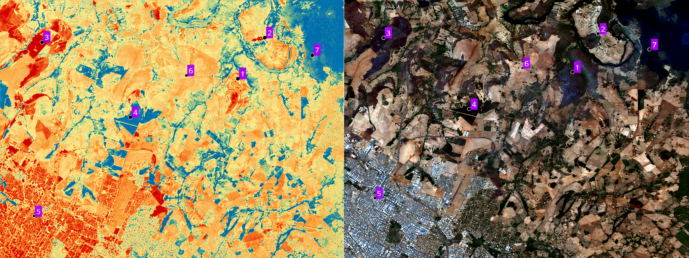

Coordenação
João Vitor Meza Bravo
Coordenador do projeto
Universidade Federal de de Uberlândia
Projeto CNPq

Na paisagem do Cerrado, é comum observar a existência de regiões que, com frequência indesejada, são atingidas por incêndios e queimadas. Prevenir ou amenizar os impactos desses fenômenos relacionados ao fogo é importante para o desenvolvimento sustentável e para a conservação da vida no bioma. Os incêndios e queimadas que ocorrem no ambiente rural do Cerrado afetam negativamente os solos e a atmosfera, colocam em risco vidas humanas e de animais silvestres, fragmentam as florestas nativas e ocasionam prejuízos econômicos e ambientais. Com essa perspectiva, elaborou-se este projeto para compreender as relações entre a ocorrência de incêndios, queimadas e as práticas agrícolas existentes na paisagem de uma porção do Cerrado Mineiro, especificamente a região de atuação do 2º Comando Operacional de Bombeiros. Pretende-se, ainda, associar a ocorrência de incêndios e queimadas em áreas de recorrência aos diferentes tipos de manejo agrícola. As áreas de recorrência correspondem às regiões nas quais, ao longo de determinado intervalo temporal, ocorre a instalação preferencial e repetida de eventos de incêndios e queimadas. Essas regiões possuem destacada importância, uma vez que demandam atenção especial dos bombeiros militares. Portanto, diagnosticar as causas e as consequências dos incêndios e queimadas em áreas de recorrência permite construir ações de prevenção e mitigação mais eficientes, reduzindo os riscos e prejuízos à sociedade. Ademais, reconhecer e mapear essas regiões, compreendendo a dinâmica espaço-temporal da ignição, da propagação e do desenvolvimento dos eventos, possibilita ampliar o conhecimento científico sobre fenômenos catastróficos relacionados ao fogo. Dessa maneira, os resultados deste projeto contribuirão para o monitoramento e a prevenção de desastres relacionados aos incêndios e queimadas que ocorrem em regiões com intensa prática agrícola.
Pessoas
Coordenador do projeto
Universidade Federal de de Uberlândia
Universidade Federal de Uberlândia
Instituto Tecnológico SIMEPAR
Corpo de Bombeiros Militar de Minas Gerais
Universidade Federal de Uberlândia
Universidade Federal de Uberlândia
Universidade Federal do Paraná
Universidade Federal de Uberlândia
Universidade Federal de Uberlândia
Universidade do Minho
Universitat de Barcelona
Universidade do Porto
Universidade Federal de Uberlândia
Universidade Federal de Uberlândia
Universidade Federal de Uberlândia
Universidade Federal de Uberlândia
Universidade Federal de Uberlândia
Cartografia interativa
Explore a área de atuação do projeto e consulte as camadas de dados disponíveis no mapa interativo.